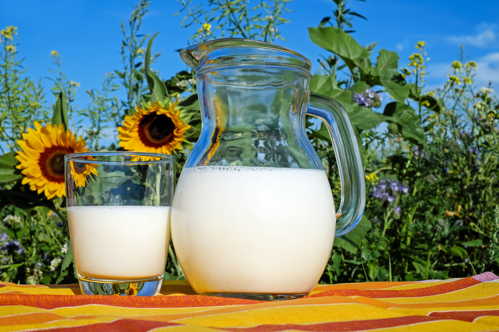

O leite antes de chegar na sua geladeira ele passa por alguns processos básicos:
Ordenha: O leite é coletado das vacas.
Resfriamento: Após a ordenha, o leite é imediatamente resfriado para impedir o crescimento bacteriano.
Transporte: O leite resfriado é transportado em caminhões até a usina de processamento.
Recepção e Testes: Ao chegar na usina, o leite ele passa por vários testes para verificar a qualidade, possÃveis contaminações e por lá também passam pela Pasteurização e pela Homogeneização.
Embalagem: O leite pasteurizado e homogeneizado é embalado em recipientes apropriados.
Distribuição: As embalagens de leite são distribuÃdas para pontos de venda através de caminhões refrigerados.
Compra e Consumo: Finalmente, os consumidores compram o leite nas lojas e levam para sua casa, onde ele é armazenado em refrigeradores para consumo próprio.
Cada uma dessas etapas é crucial para garantir a qualidade, segurança e frescor do leite que chega à sua mesa.

A bebida é uma boa fonte de potássio e mineral que tem efeitos vasodilatadores e anti-hipertensivos. Dessa forma, contribui com o controle da pressão arterial, que é um fator de risco para doenças cardiovasculares, como infartos.
No entanto, é importante optar pelo leite desnatado, que é menos gorduroso. E também para nossos pequenos é uma fonte rica de nutrientes essenciais para o desenvolvimento infantil, fornecendo proteÃnas de alta qualidade, cálcio, vitaminas e minerais. As proteÃnas presentes no leite são fundamentais para a formação e reparação dos tecidos, crescimento muscular e sÃntese de enzimas e hormônios.